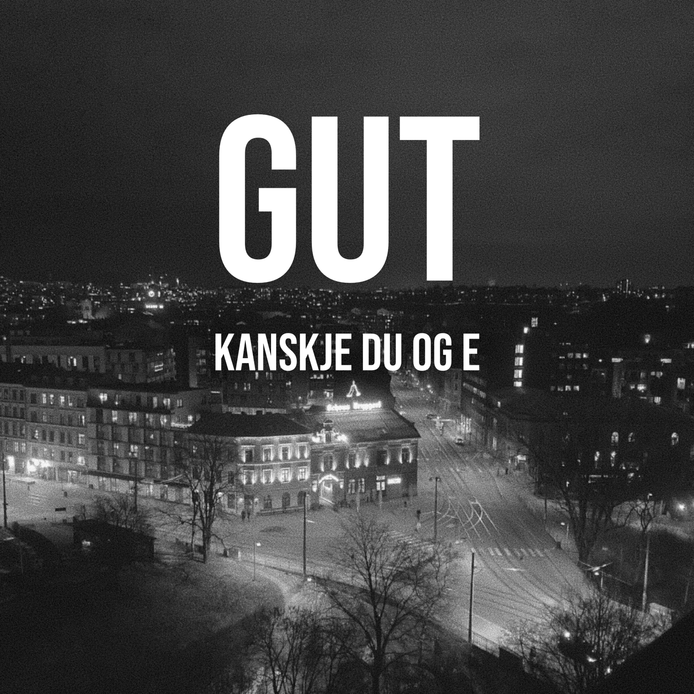
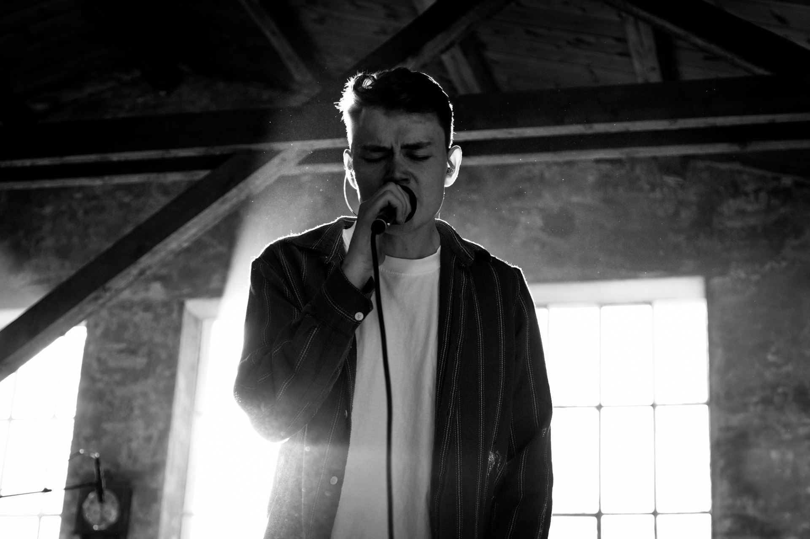

IDENTITET OG SOUND
“Det er lett, men følsomt! Soundet får det til å bruse i blodet og du får skrudd på følelsene.”
Vi er et Oslo-basert band som lager funk-preget pop og rock låter på Folldalsdialekt.
Vi har vårt særpreg i vokalisten, Hans Mortens, unike stemme som spenner fra sår og luftig, til lidenskapelig kraftfull. Han backes av funky gitarer, drivende trommer og det som keyboardist Håkon liker å kalle “gullstøv-synther”. Vi har flere låter anbefalt på Urørt og mer enn 3000 avspilninger på radio.
AMBISJONER:
Minst 3 nye singler i 2027
Konsert våren 2027
Legge inn støt på Insta og Tiktok
Vi elsker å lage jordnær, smakfull og relaterbar musikk som favner brett! Det har vi ambisjon om å fortsette med. Tekstene spenner fra det banale og gjenkjennelige, som tankekjøret før man tør å spørre ut crushet, til det dypt personlige og sårbare, som å miste moren sin til kreft, slik vi skildrer i «FIGUREN AV DE». Vi er overbevist om at musikken vår på en god måte kan treffe en nerve hos lytterne.
fra IDYLL shoot med Celine Rensel